Open Uptime Quest and press ENTER on the title screen (or tap PRESS ENTER).
On the zone screen, pick HA, FT or DR with the arrow keys and press ENTER, or just click a zone.
Sound is off at first. Click BGM for music and SFX for sound effects (top-right corner) if you want them.
Each zone has a short instruction box at the top. Follow it, break things, and watch what happens.
Press ESC (or the back arrow) to return to the zone screen at any time.
HOW TO READ THIS MANUAL
Each zone chapter has the same parts: the goal, a screen tour with numbered labels, how it works, and a step-by-step walkthrough. If you only have a few minutes, read the Quick Start above and the walkthrough of the zone you want to play.
Numbered yellow badges on the screenshots match the numbered lists right under them.
1WELCOME TO UPTIME QUEST
Uptime Quest is an 8-bit simulation that goes with the report Cloud Reliability, Fault Tolerance and Disaster Recovery. Instead of only reading about how cloud systems stay online, you get to break them on purpose and watch them recover.
The three zones
The report explains cloud reliability as three layers of defense. Each layer is one zone in the game:
HA ZONEPREVENT
High Availability keeps everyday failures from causing downtime. You crash servers and watch a load balancer route around them.
FT ZONESURVIVE
Fault Tolerance lets a system survive failures that do happen. You compare acting before a failure (proactive) with acting after it (reactive).
DR ZONERECOVER
Disaster Recovery brings a business back after a large-scale disaster. You pick a recovery strategy, trigger a disaster and race the clock.
Meet Andy Lim
Andy Lim owns a mid-sized business that sells light bulbs and electrical fixtures, both retail and wholesale. He moved his store to the cloud, he has a small IT team and a limited budget, and his holiday sale is coming up. Every zone is about keeping Andy's store online. Andy is a fictional case study made for this report.
WHAT'S REAL AND WHAT'S ILLUSTRATIVE
The concepts are real and come from the report's sources: redundancy models, health checks and failover, proactive and reactive techniques, the fault → error → failure chain, RTO and RPO, and the four AWS recovery strategies.
The numbers inside the games (seconds, request counts, order counts, costs) are made up for the demo and sped up so a whole outage fits in a few seconds. They follow the right order (for example, Backup & Restore is always slower and cheaper than Active/Active), but they are not measurements.
2GETTING STARTED
Opening the app
Online: open the Uptime Quest link shared by the presenter in any modern browser (Chrome, Edge, Firefox or Safari).
Offline: if you have the project folder, double-click index.html. It runs without internet.
Phones and tablets work too. Tap instead of using the keyboard.
The title screen
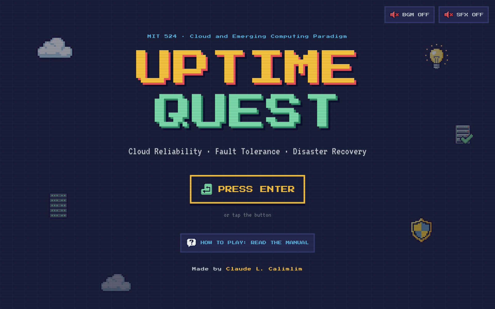
The game title.
PRESS ENTER: press ENTER or SPACE, or click / tap this button, to continue.
HOW TO PLAY: opens this manual. It's also linked from the About box and the zone screen's footer. Inside the manual, the back arrow (or ESC, or your browser's Back button) returns you to the game.
The app's creator.
BGM and SFX: turn music and sound effects on or off before you start.
The zone screen (hub)
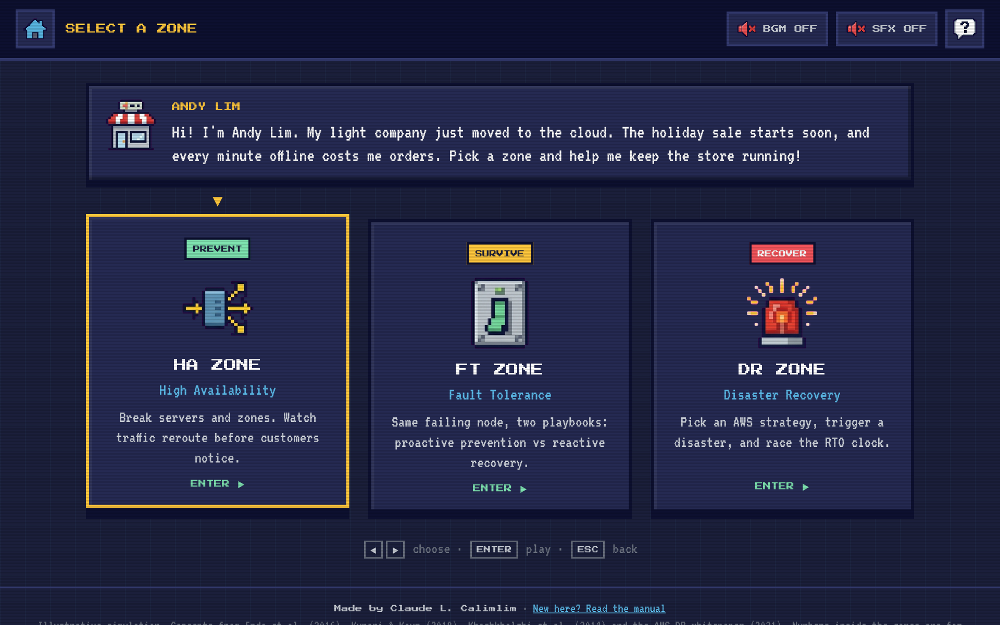
Home: back to the title screen (or press ESC).
BGM: background music on/off. It is off when you first open the app.
SFX: sound effects (beeps, alarms, clicks) on/off. Also off at first.
About: what the app is, its sources, credits, and a link to this manual.
Andy Lim's message: he types out a short intro when you arrive.
Zone cards: the yellow outline and arrow show which zone is selected. Move with ◀▶ (or ▲▼), hover with the mouse, then press ENTER or click to play.
A reminder of the keyboard controls (hidden on touch screens).
Sound
Uptime Quest starts silent: both BGM and SFX are OFF every time you open the app. Click BGM for the looping 8-bit music and SFX for game sounds.
The BGM and SFX buttons are on the title screen, the zone screen, every zone, and the top bar of the online manual.
Once you turn the music on, it keeps playing everywhere in the app, including while you read the online manual.
Reloading the page turns both back off.
Jumping straight to a screen
Add one of these to the end of the app's address to skip the menus: #hub (zone screen), #ha, #ft, #dr or #manual (this manual). This works on a fresh load and on a tab that's already open.
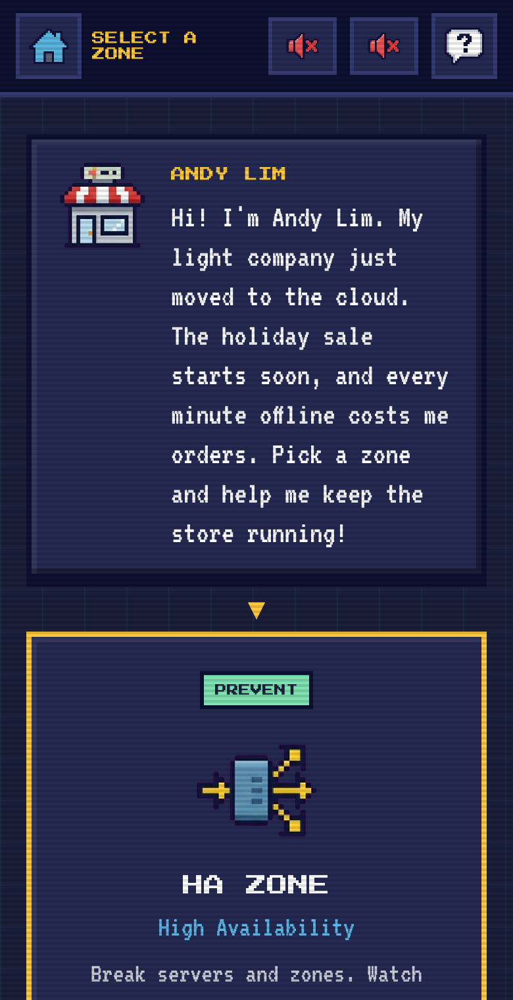
On a phone
The layout stacks into one column. Everything is tap-to-use: tap a zone card to open it, tap the back arrow to leave. Keyboard hints are hidden on touch screens.
In the FT zone the two panels sit on top of each other instead of side by side, so scroll down to see the reactive panel.
3CONTROLS CHEAT SHEET
Everything can be done with a mouse or by tapping. These keyboard shortcuts are optional.
WHERE
KEY
WHAT IT DOES
Title screen
ENTER / SPACE
Start (go to the zone screen)
Zone screen
◀▶▲▼
Move between zones
ENTER
Open the selected zone
ESC
Back to the title screen
Any zone
ESC
Back to the zone screen
HA zone
1 – 4
Pick a redundancy model (None, 2N, N+M, N-way active)
C
Chaos mode on/off
R
Repair all servers
FT zone
ENTER / SPACE
Start the scenario
DR zone
1 – 4
Pick a strategy (Backup & Restore, Pilot Light, Warm Standby, Active/Active)
ENTER / SPACE
Trigger the disaster
About box
ESC
Close it (or click outside it)
Manual
ESC
Back to the game (arrow keys and space scroll the page as usual)
Mouse and touch
ACTION
RESULT
Click / tap a server (HA)
Crashes it. Click a crashed server again to repair it.
Click OUTAGE on a zone column (HA)
Crashes every server in that availability zone at once.
Click a technique button (FT)
Uses that technique. Buttons only work when they're lit up.
Click a strategy card (DR)
Picks it and shows what runs in the recovery region.
Click BGM / SFX
Turns music / sound effects on or off.
4HA ZONE: HIGH AVAILABILITY
GOAL Keep Andy's store answering customers while servers fail, and see how each redundancy model handles it.
Screen tour
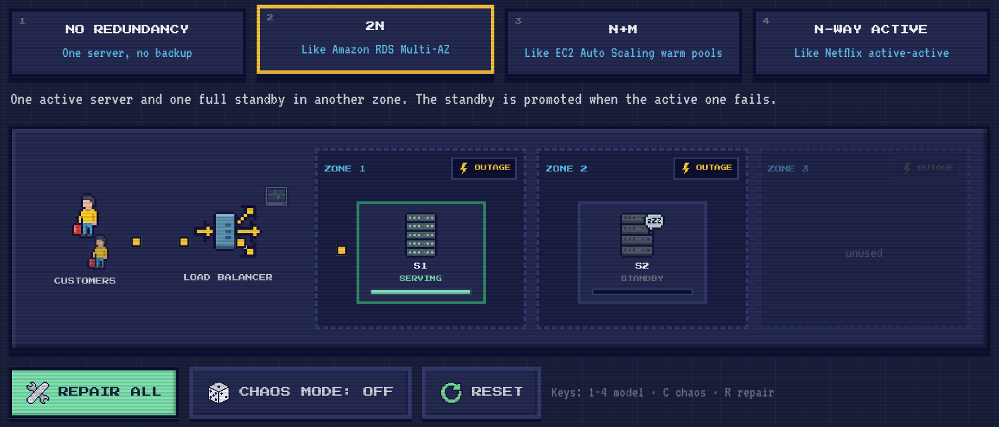
Redundancy models: four buttons (keys 1–4). Each has a real-world example under its name.
Model description: one line explaining the selected model.
Customers: they send about 6 requests every second (the small yellow squares).
Load balancer: sends each request to a healthy server, taking turns. The small monitor above it flashes on every health check (once per second).
Availability zones 1–3: separate data centers. Columns marked "unused" have no server in the current model.
OUTAGE: knocks out every server in that zone at once, like a power failure in one data center.
Server tile: click it to crash it, click again to repair it. It shows its name, its status (see table below) and a load bar.
REPAIR ALL (R): fixes every crashed server.
CHAOS MODE (C): crashes a random server every 3–5.5 seconds and repairs it 6 seconds later.
RESET: restarts the current model with fresh counters.
How it works
When a server crashes, the load balancer doesn't know right away. It keeps sending requests to the dead server until the next health check, up to 1 second later, and those requests are dropped (they flash red). After the health check, the load balancer stops using that server. What happens next depends on the model:
MODEL
SERVERS
WHEN ONE FAILS
REAL-WORLD EXAMPLE
No redundancy
1 server
Nothing takes over. The store is down until you repair it. This is a single point of failure.
-
2N
1 active + 1 full standby in another zone
After the health check, the standby is promoted to primary. That takes 1.5 more seconds, and requests are dropped in the meantime.
Amazon RDS Multi-AZ
N+M
N = 2 active + M = 1 spare in a warm pool
The surviving server is overloaded (it has to do the work of two) and about half the requests fail until the spare joins 1.5 seconds later.
EC2 Auto Scaling warm pools
N-way active
3 active, all serving
The other two absorb the work right away. They were only running at about 67% load, so nothing gets dropped after the health check. Lose two at once and the last one overloads.
Netflix multi-region active-active
Server status labels
LABEL
MEANING
SERVING
Healthy and receiving traffic.
CRASHED · LB UNAWARE
Dead, but the load balancer hasn't noticed yet. Requests sent here are lost.
DOWN
Dead, and the load balancer has stopped sending it traffic.
STANDBY / WARM POOL
A healthy backup that isn't serving yet.
JOINING...
A standby or spare taking over (1.5 seconds).
WAITING FOR CHECK
Repaired, waiting for the next health check before it gets traffic again.
OVERLOADED
Getting more work than it can handle, so some requests fail. Its load bar turns red.
Reading the results
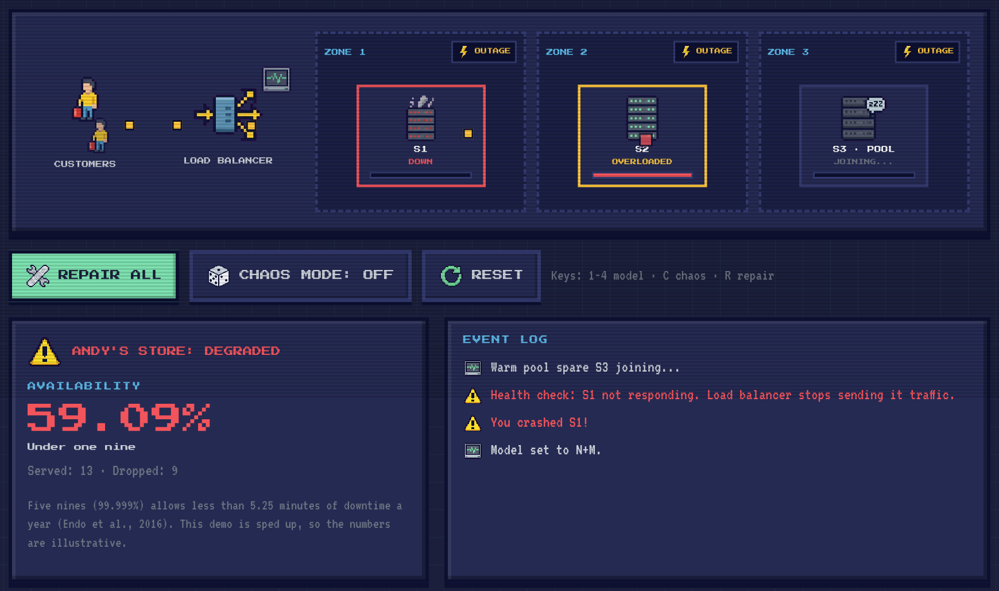
A crashed server (DOWN).
The surviving server, OVERLOADED and dropping some requests.
The warm-pool spare, JOINING to restore capacity.
Store status, based on the last 3 seconds: ONLINE if more than 90% of requests succeeded, DEGRADED if 25–90%, DOWN if under 25%.
Availability: requests served ÷ all requests since the model was selected. Below it, the number of "nines" (99% is two nines, 99.9% is three).
Event log: the newest event is on top. It explains every crash, health check and failover.
When you switch models or leave the zone, your run is saved to the YOUR RUNS PER MODEL table at the bottom, as long as it had at least 20 requests. The table keeps your longest run for each model. Use it to compare models. It clears when the page is reloaded.
Walkthrough
MISSION 1A single point of failure
Press 1 (or click NO REDUNDANCY).
Click server S1 to crash it.
Watch every request turn red and the store switch to DOWN. Nothing can take over.
Click S1 again to repair it. It waits for the next health check, then serving resumes.
MISSION 22N failover
Press 2. S1 is active in Zone 1 and S2 is the standby in Zone 2.
Crash S1. Its label reads CRASHED · LB UNAWARE until the health check catches it.
Read the event log: "Promoting standby S2 to primary...", then "S2 is the new primary".
Repair S1. It comes back as the new standby, not the primary.
MISSION 3N+M overload
Press 3. S1 and S2 are active and S3 waits in the warm pool.
Crash S1. S2's load bar turns red (OVERLOADED) because it's doing the work of two.
After 1.5 seconds S3 joins and both bars go back to normal.
MISSION 4N-way active under chaos
Press 4, then press C to turn on chaos mode.
Let it run for 20–30 seconds. Servers crash and recover on their own.
Switch back to 2 with chaos still on and compare the availability numbers in the runs table.
Try this: in N-way active, use OUTAGE on Zone 2. One zone going down is survivable when traffic is spread across zones. That's why cloud providers recommend deploying to several availability zones.
5FT ZONE: FAULT TOLERANCE
GOAL Finish Andy's holiday orders job even though Node A is about to fail, once by preventing the failure and once by recovering from it.
The idea
Both panels show the same situation at the same time: Node A is running a job and slowly overheating. The left panel (Proactive FT) only lets you act before Node A fails. The right panel (Reactive FT) only lets you act after it fails. Comparing the two is the point of this zone.
Screen tour
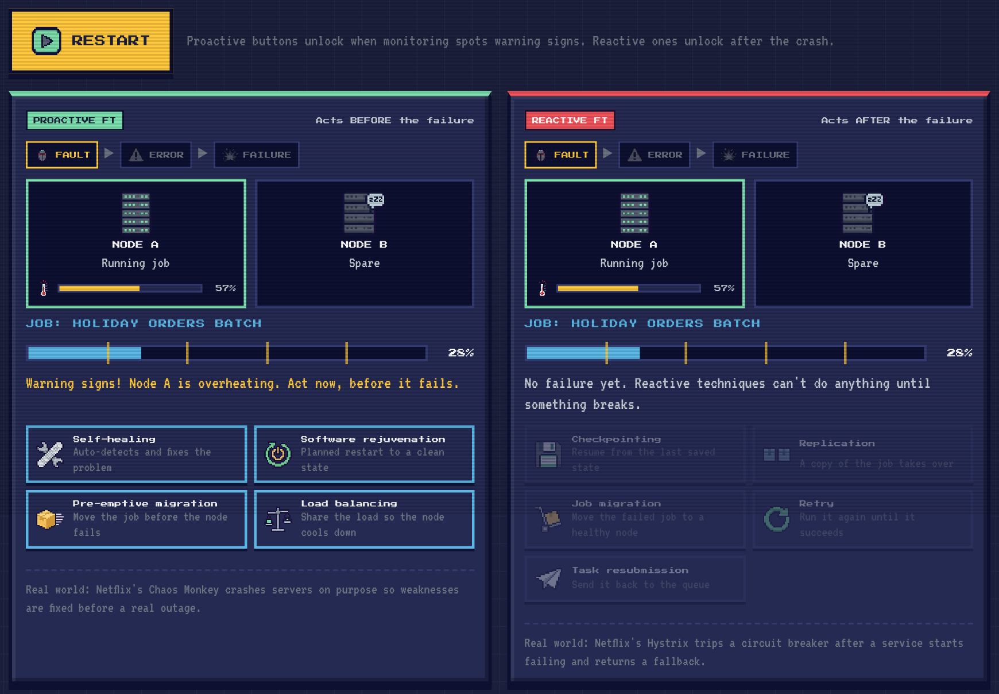
START SCENARIO / RESTART (ENTER): starts both panels together.
Fault → error → failure chain: each step lights up as the problem gets worse. Fault = the underlying problem, error = the system's internal state goes wrong, failure = the user sees it.
Node A temperature: rises from 0% to 100% in about 8 seconds. At 30% the fault shows (warning signs), at 65% the error shows, at 100% Node A crashes.
Node B: a healthy spare that some techniques use.
Job bar: the holiday orders job takes about 16 seconds. The yellow lines are checkpoints: the job saves its progress at 20%, 40%, 60% and 80%.
Proactive techniques: unlock (they flash) once the temperature reaches 30% and stay available until Node A crashes. That gives you about 5–6 seconds.
Reactive techniques: locked until Node A crashes. Nothing has broken yet, so there's nothing to recover from.
A real-world example for each side: Netflix's Chaos Monkey (proactive) and Hystrix (reactive).
Proactive techniques (left panel)
TECHNIQUE
WHAT HAPPENS IN THE GAME
WORK LOST
EXTRA TIME
Self-healing
The system spots the problem and fixes Node A by itself. The temperature drops and the job continues.
0%
0.8 s
Software rejuvenation
A planned restart puts Node A back in a clean state, then the job picks up where it was.
0%
1.5 s
Pre-emptive migration
The job moves to Node B before Node A fails. Node A still crashes, but nothing was running on it, so there's no failure for the user.
0%
0.5 s
Load balancing
Node B takes half the work, Node A cools to about 45% and never crashes.
0%
0 s
If you don't pick a proactive technique in time, Node A crashes and the left panel shows "Too late!". Proactive techniques can't help once the failure has happened. Press RESTART to try again.
Reactive techniques (right panel)
Node A crashes when the job is at about 49%. Then the reactive buttons unlock:
TECHNIQUE
WHAT HAPPENS IN THE GAME
WORK LOST
EXTRA TIME
Checkpointing
Node A restarts and the job resumes from the last checkpoint (40%), not from zero.
about 10%
1.4 s
Replication
A copy of the job was already running on Node B, so it takes over at once. It costs double the resources.
0%
0.3 s
Job migration
The failed job moves to healthy Node B and starts over there.
all (about 49%)
0.6 s
Retry
Node A restarts and runs the job again. The first attempt fails because the node is still unstable, and the second succeeds. The job starts over.
all (about 49%)
3.2 s
Task resubmission
The job goes back to the queue, waits for a free slot, then starts over on Node B.
all (about 49%)
1.6 s
"Extra time" counts the recovery pause only, not the time you take to choose.
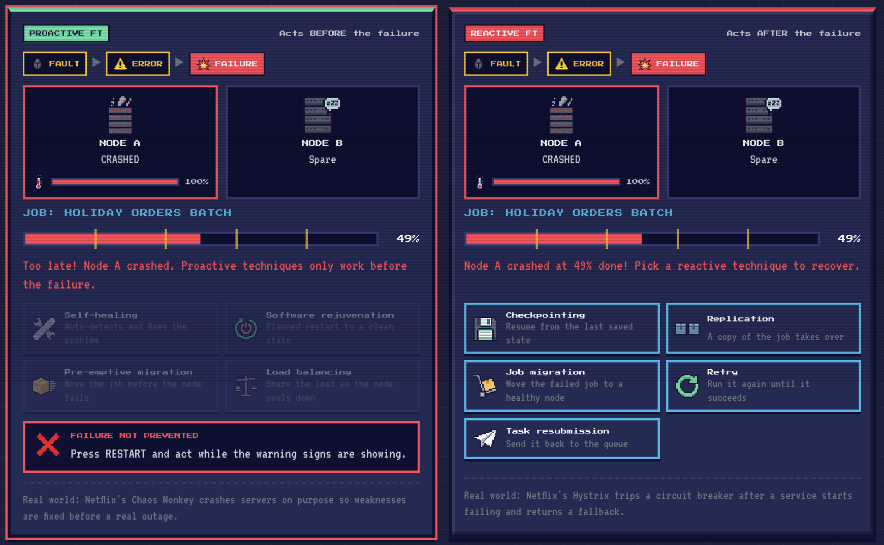
The proactive panel when nothing was picked in time: FAILURE NOT PREVENTED.
The chain reaches FAILURE (red) once the user is affected.
The reactive panel tells you where the job stopped.
Reactive techniques are now unlocked and flashing. Pick one.
After a run
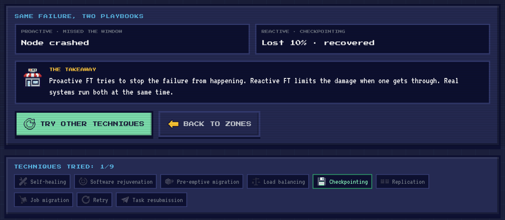
Same failure, two playbooks: the work lost on each side, side by side.
The takeaway: proactive tries to stop the failure, reactive limits the damage, and real systems use both.
Techniques tried: lights up each of the 9 techniques you've used. Try all 9 for a trophy. It resets when the page is reloaded.
Walkthrough
RUN 1Prevent and recover
Click START SCENARIO.
Watch the temperature bar. At 30%, FAULT lights up and the proactive buttons start flashing.
On the left, click Pre-emptive migration. The job jumps to Node B.
On the right, wait for Node A to crash (about 8 seconds in), then click Checkpointing.
Wait for both jobs to finish and read the summary: 0% lost on the left, about 10% lost on the right.
RUN 2Miss the window
Click TRY OTHER TECHNIQUES (or RESTART) and don't touch the left panel.
When Node A crashes, the left panel shows Too late! This is why proactive techniques need monitoring and early warning.
On the right, try Job migration and notice the job restarts from 0%.
Try this: compare Checkpointing with Retry. Both use Node A again, but only checkpointing keeps your progress.
6DR ZONE: DISASTER RECOVERY
GOAL Pick a recovery strategy for Andy's store, survive a disaster in Region A, and compare downtime, data loss and cost.
Two numbers to watch
RTO · RECOVERY TIME OBJECTIVE
How long the store is down: the time from the disaster to full service again. Smaller is better.
RPO · RECOVERY POINT OBJECTIVE
How much data is lost, measured in time: anything saved after the last copy reached the backup site is gone. Smaller is better.
Screen tour
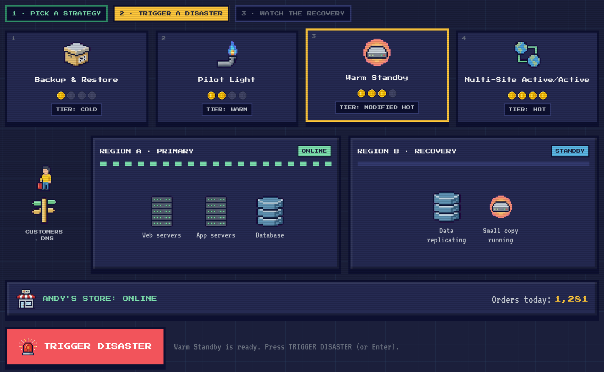
Progress strip: 1 pick a strategy, 2 trigger a disaster, 3 watch the recovery. The current step is yellow.
Strategy cards (keys 1–4). A green check appears on cards you've already tested.
Monthly cost in coins, from 1 (cheapest) to 4 (most expensive).
Tier: the closest backup tier from the report's Implementation Tiers table (Cold, Warm, Modified Hot, Hot).
Region A: Andy's main site, with web servers, app servers and the database.
Region B: the recovery site. What runs here depends on the strategy you pick.
Store status and the orders today counter, which goes up while the store is online.
TRIGGER DISASTER (ENTER): unlocks after you pick a strategy.
The four strategies
STRATEGY
WHAT'S IN REGION B BEFOREHAND
RTO
RPO
COST
Backup & Restore
Only backups. Servers have to be built from scratch.
8 h
4 h
1/4
Pilot Light
Data replicating, app servers switched off.
40 min
10 min
2/4
Warm Standby
Data replicating plus a small working copy of the store.
10 min
1 min
3/4
Multi-Site Active/Active
A full second site already serving customers.
30 s
about 3 s
4/4
Illustrative numbers. The order (slowest and cheapest to fastest and most expensive) follows the AWS Disaster Recovery whitepaper (2021).
During the disaster
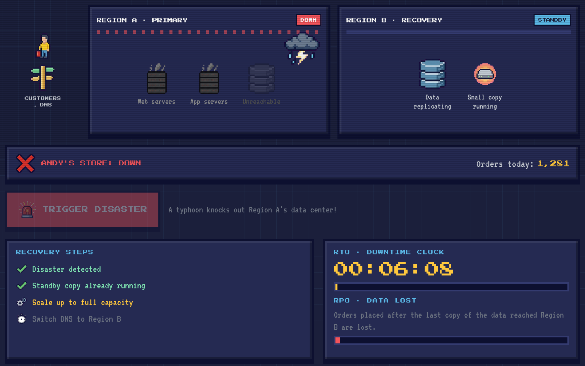
Region A goes DOWN. The disaster changes every time: a typhoon, cut power lines or a security breach.
Recovery steps: the first step ("Disaster detected") shows red. Each later step lights up yellow while it runs and turns into a green check when done. Strategies that keep more running in Region B have fewer steps.
RTO clock: counts the downtime in game time (sped up). It turns green when the store is back.
RPO bar: how much recent data was lost. Long red bar = lots of lost orders.
The result
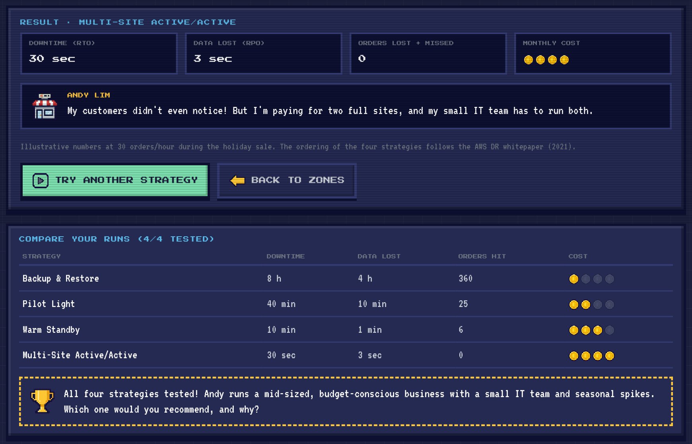
Result: downtime (RTO), data lost (RPO), orders affected and monthly cost. "Orders lost + missed" assumes 30 orders per hour during the holiday sale: orders lost from the RPO window plus orders missed while the store was down.
Andy's reaction to how it went.
TRY ANOTHER STRATEGY picks the next untested one. BACK TO ZONES returns to the hub.
Compare your runs: appears after 2 tested strategies. It clears when the page is reloaded.
After all 4, Andy's guide question appears. This is the class discussion question.
Walkthrough
RUN 1The cheapest plan
Press 1 for Backup & Restore. Region B shows only backups.
Press ENTER (or click TRIGGER DISASTER).
Watch all five recovery steps. The clock runs to 8 hours and the RPO bar fills up: 4 hours of orders are gone.
RUN 2The most expensive plan
Press 4 (or click the Multi-Site Active/Active card). Region B is already online.
Trigger the disaster. The store never goes dark and there are only three quick steps.
Look at the cost: 4 coins.
RUN 3Answer Andy's question
Test Pilot Light (2) and Warm Standby (3) too.
Use the comparison table and Andy's situation (mid-sized, budget-conscious, small IT team, seasonal spikes) to decide which strategy you would recommend.
There is no single "correct" answer. Be ready to explain the trade-off you chose.
7GLOSSARY
Availability
The share of time (or of requests) a service works. 99.999% is called "five nines" and allows less than 5.25 minutes of downtime a year (Endo et al., 2016).
Availability zone
A separate data center (with its own power, cooling and network) inside one cloud region.
Region
A geographic area with one or more data centers. Disaster recovery usually uses a second region.
Load balancer
The traffic director that spreads requests across servers and avoids unhealthy ones.
Health check
A regular "are you alive?" ping from the load balancer to each server.
Failover
Switching work from a failed component to a backup.
Redundancy
Keeping extra components so one failure doesn't stop the service.
2N / N+M / N-way active
Redundancy models: one full standby per active unit / M spares shared by N active units / every unit active and sharing the load.
Standby / warm pool
A backup server that is ready but not serving traffic yet. A warm pool is a group of pre-started spares.
Fault → error → failure
A fault (an underlying problem) causes an error (a wrong internal state), which can become a failure (something the user notices).
Proactive FT
Fault tolerance that predicts and prevents failures before they happen.
Reactive FT
Fault tolerance that responds after a failure has happened.
Checkpoint
A saved snapshot of a job's progress, so it can resume from there.
Replication
Running copies of a job or data in more than one place.
Disaster recovery
Preparing for and recovering from an event that stops a workload at its main location.
RTO
Recovery Time Objective: the maximum acceptable time between the interruption and the restoration of service.
RPO
Recovery Point Objective: the maximum acceptable data loss, measured in time.
DNS
The internet's address book. Switching DNS points customers to the recovery region.
8TROUBLESHOOTING AND FAQ
I can't hear anything.
Sound is off by default. Click BGM (music) and/or SFX (effects) in the top bar so they read ON. Also check your device volume and that the browser tab isn't muted.
The music didn't start when I opened the page.
That's expected: sound is always off when the app opens. Click BGM once and the music starts right away.
Something looks stuck.
HA zone: press REPAIR ALL or RESET. FT zone: press RESTART. DR zone: pick a strategy card again. You can always press ESC to go back to the zone screen and come back in.
A button doesn't respond.
Dimmed buttons are locked on purpose. In the FT zone, proactive techniques unlock at 30% temperature and reactive ones after the crash. In the DR zone, TRIGGER DISASTER unlocks after you pick a strategy.
My comparison tables disappeared.
Results are kept only while the page stays open. Reloading the page clears them.
Why do the numbers drop so fast?
Everything is sped up so an outage fits into a few seconds of play. A real 99.9% service is down for minutes a month, not seconds.
Are these real AWS or Netflix numbers?
No. The models, techniques and strategies are real and come from the sources, but every number in the game is illustrative.
Does it work without internet?
Yes. Once the page has loaded, or if you open the project folder's index.html, everything (icons, fonts, music) is stored locally.
9SOURCES AND CREDITS
Sources behind the concepts
Endo, P.T., Rodrigues, M., Gonçalves, G.E., Kelner, J., Sadok, D.H., & Curescu, C. (2016). High availability in clouds: systematic review and research challenges. Journal of Cloud Computing, 5:16.
Kumari, P., & Kaur, P. (2018). A survey of fault tolerance in cloud computing. Journal of King Saud University – Computer and Information Sciences, 33, 1159–1176.
Khoshkholghi, M.A., Abdullah, A., Latip, R., Subramaniam, S., & Othman, M. (2014). Disaster Recovery in Cloud Computing: A Survey. Computer and Information Science, 7(4), 39–59.
Amazon Web Services. (2021). Disaster Recovery of Workloads on AWS: Recovery in the Cloud.
Amazon Web Services. High availability (Multi-AZ) for Amazon RDS; Warm pools for Amazon EC2 Auto Scaling.
Netflix. (2013). Active-Active for Multi-Regional Resiliency. Netflix Technology Blog.
Netflix. Netflix/Hystrix and Netflix/chaosmonkey GitHub repositories.
Credits
Music: "Link to the Castle" by TAD ON (royalty free, YouTube).
Fonts: Press Start 2P and VT323 (SIL Open Font License).
Icons: pixel art generated for this project.
THANKS FOR PLAYING!
Uptime Quest and this manual were made by Claude L. Calimlim.
ABOUT
Made by: Claude L. Calimlim
Uptime Quest is an interactive companion to the report
Cloud Reliability, Fault Tolerance and Disaster Recovery (MIT 524).
The three zones follow the report: High Availability prevents, Fault Tolerance survives,
Disaster Recovery recovers.
SOURCES
Endo et al. (2016), High availability in clouds
Kumari & Kaur (2018), A survey of fault tolerance in cloud computing
Khoshkholghi et al. (2014), Disaster recovery in cloud computing
AWS (2021), Disaster Recovery of Workloads on AWS
Netflix Tech Blog; Netflix/Hystrix and Netflix/chaosmonkey on GitHub
CREDITS
Music: "Link to the Castle" by TAD ON (royalty free, YouTube)
Fonts: Press Start 2P and VT323 (SIL Open Font License)